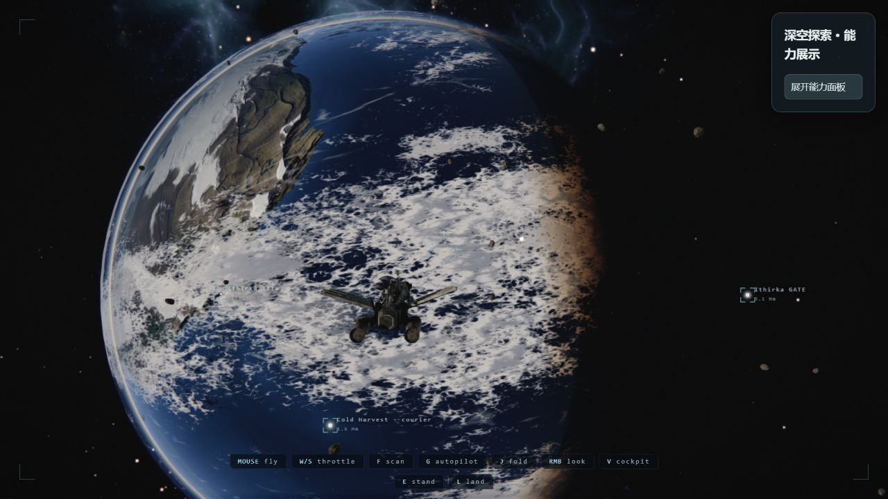

行星、海洋与云层
观察行星弧面、海陆颜色、云层、昼夜交界和薄薄的大气。这些外观由生成参数与着色器共同决定。
- 打开中文能力体验，等待加载后点击 WAKE。
- 点击「类地行星」，收起面板观察画面。
- 点击「扫描目标」，查看扫描数量与档案变化。
场景快捷定位会移动飞船，不代表玩家手动飞到了这里。
BROWSER SPACE EXPLORATION / 实际运行
一个种子生成世界，一组着色器赋予它光。运行 The Long Silence，拆解浏览器太空探索游戏的实现。
公开导览 · 五组实际截图、技术说明与产品方向，无需启动游戏。

01 / EXPERIENCE
图片来自本机原版渲染。右侧说明告诉你该看什么、如何操作。
固定场景定位调用原版 pose()，真实运行相同渲染管线。
观察行星弧面、海陆颜色、云层、昼夜交界和薄薄的大气。这些外观由生成参数与着色器共同决定。
场景快捷定位会移动飞船，不代表玩家手动飞到了这里。
扫描目标增加发现，推进指令并触发升级；七个共振器构成主要剧情路线。
W/S 调节油门，方向键转向，X 停船，J 折叠航行，M 打开星图。驾驶舱起步时先接管驾驶座。
中文面板为本研究新增。定位、补充折叠电量与地面拍摄站位用于能力展示；原版入口保持原有流程。
02 / HOW IT WORKS
点击节点查看输入、处理过程和可复用部分。
提前生成材质图片、处理法线和粗糙度，制作飞船与舱内模型，再把资产随网页分发。现成资产运行不需要重新调用生成模型。
JavaScript 管理世界与交互，Three.js 管理场景资源，GLSL 计算外观和光。当前并没有由大模型实时编造整个宇宙的运行链路。
03 / REPRODUCIBLE WORLD
直接执行上游生成函数得到的数据。下拉框切换星系目录，不会改变游戏状态。
5 项生成检查通过：同种子星系一致、不同种子有差异、完整星系一致、名称唯一、起点包含花园世界。
OUR UNDERSTANDING / 我们的产品理解
从空间表达延伸到人与人的连接。以下为我们提出的产品构想，尚未实现社交服务。
作品与故事构成地貌，卫星承载项目；自转表达交流节奏，大气表达内容开放范围。
发布作品或需求，吸引相关的人讨论。双方接受邀请后建立航道，继续交流或共创。
主题星域聚集兴趣，空间站组织合作，星星保存双方选择留下的记忆与成果。
04 / WHAT TO BUILD NEXT
以下是基于源码的产品建议，尚未实现。先完善体验，再增加系统复杂度。
05 / EVIDENCE & LIMITS
正常着陆在本次浏览器中停留于云层交接阶段。低画质与直接地表诊断入口已显示真实地形和步行视角；这不代表正常着陆流程已修复。
原版依赖安装、生产构建、固定种子生成检查，以及浏览器内的场景和交互验证。实际结果详见研究记录。
本次使用 RTX 4070 Laptop GPU。加载编译、驾驶舱、太空和地面的开销不同。面板提供瞬时帧率，不能当作稳定的性能基准。
完整七共振器通关、跨浏览器与不同显卡测试、长时间运行，以及所有参数组合。移动端入口会提示改用电脑。
在总工作区运行 ./projects/012-the-long-silence/experiments/start.ps1。原版服务为 5112 端口，导览为 8012 端口。
本页为公开静态研究导览；完整游戏仍需自行启动本机服务。页面没有加载远程游戏，也没有把游戏嵌入后台持续运行。
进入中文能力体验 ↗ · 原版游戏 ↗ · 已验证的地表体验 ↗
地表诊断入口采用低画质并跳过正常下降过渡。
外部访客请先按仓库说明启动本机服务，再访问本机导览。公开站点不连接访客的本机端口。
研究版本：69b3296b4b6ecb3ca75ed6193e4b785c4c791c0f，2026-09-09 核对。
固定版本源码 ↗ · 完整中文研究记录 · 验证记录 · 原版 MIT 许可证